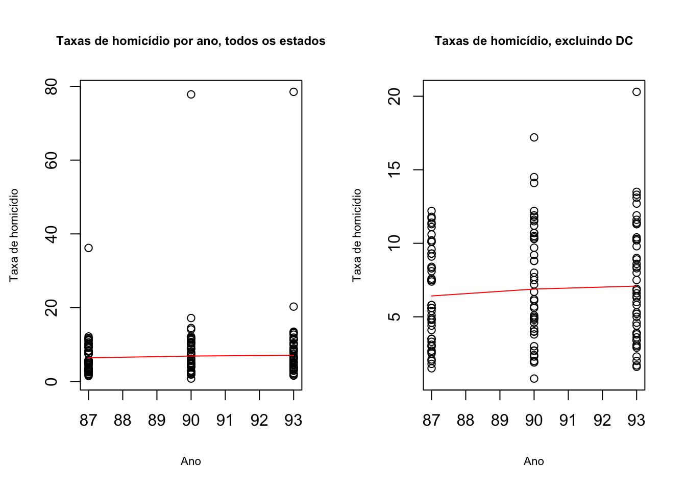
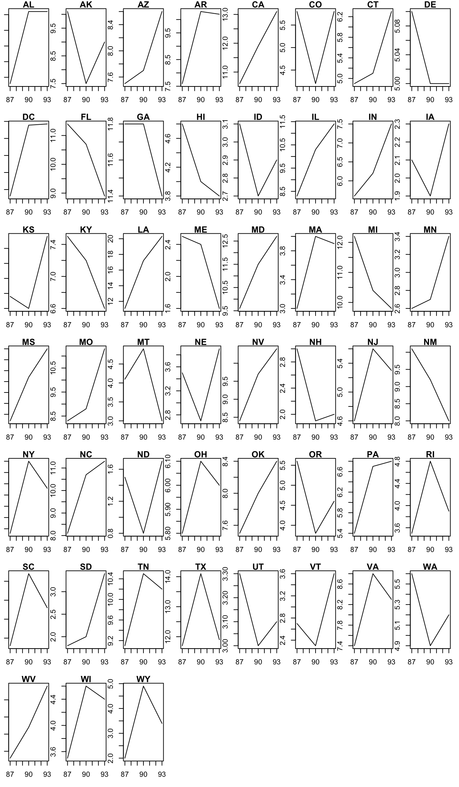
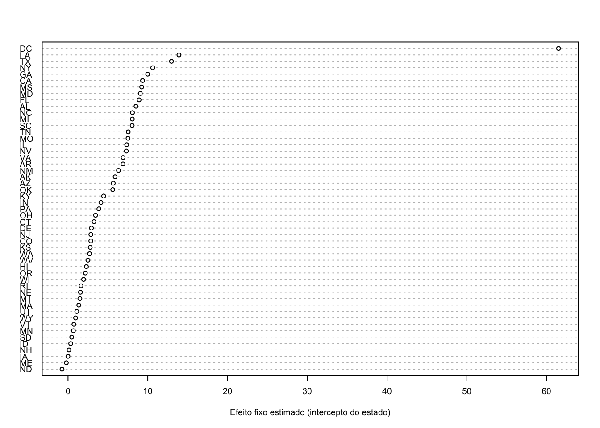

library(foreign) # read.dta()
library(lmtest) # coeftest()
library(sandwich) # erros-padrão robustos e clusterizados para lm()
library(plm) # modelos de painelAula 8 — Dados em painel: primeiras diferenças, efeitos fixos e aleatórios
1 Pacotes necessários
2 Dados
3 Descrição do Banco
Os dados (MURDER1, de Wooldridge, Introdução à Econometria) cobrem os 50 estados americanos e o Distrito de Colúmbia (51 unidades) em 1987, 1990 e 1993.
- id: identificador numérico do estado
- state: sigla do estado
- year: ano
- mrdrte: taxa de homicídios (por 100 mil habitantes)
- exec: número de execuções (pena de morte) nos três anos anteriores
- unem: taxa de desemprego (%)
- d90: dummy para o ano de 1990
- d93: dummy para o ano de 1993
3.1 Carregando os dados
dat <- read.dta("../../dados/MURDER1.dta")
head(dat)summary(dat) id state year mrdrte exec
Min. : 1 Length:153 Min. :87 Min. : 0.800 Min. : 0.000
1st Qu.:13 Class :character 1st Qu.:87 1st Qu.: 3.900 1st Qu.: 0.000
Median :26 Mode :character Median :90 Median : 6.400 Median : 0.000
Mean :26 Mean :90 Mean : 8.071 Mean : 1.229
3rd Qu.:39 3rd Qu.:93 3rd Qu.:10.200 3rd Qu.: 1.000
Max. :51 Max. :93 Max. :78.500 Max. :34.000
unem d90 d93
Min. : 2.200 Min. :0.0000 Min. :0.0000
1st Qu.: 4.900 1st Qu.:0.0000 1st Qu.:0.0000
Median : 5.800 Median :0.0000 Median :0.0000
Mean : 5.973 Mean :0.3333 Mean :0.3333
3rd Qu.: 7.000 3rd Qu.:1.0000 3rd Qu.:1.0000
Max. :12.000 Max. :1.0000 Max. :1.0000 3.2 Explorar as informações
3.2.1 Taxas de homicídio por ano (com e sem DC)
par(mfrow=c(1,2)) #plotar dois graficos na mesma linha
plot(dat$year,
dat$mrdrte,
main = "Taxas de homicídio por ano, todos os estados",
cex.main = .75,
xlab = "Ano",
ylab = "Taxa de homicídio",
cex.lab = .7)
lines(lowess(dat$year, dat$mrdrte),
col = "red")
sem_dc <- dat[dat$state != "DC", ]
plot(sem_dc$year,
sem_dc$mrdrte,
main = "Taxas de homicídio, excluindo DC",
cex.main = .75,
xlab = "Ano",
ylab = "Taxa de homicídio",
cex.lab = .7)
lines(lowess(sem_dc$year, sem_dc$mrdrte), col = "red") 
3.2.2 Taxas de homicídio por ano e por estado
par(mfrow=c(7,8),
mar=c(3,1,1,1),
oma=c(0,0,0,0))
for (j in min(dat$id):max(dat$id)) {
este_estado <- dat[dat$id == j, ] # linhas do estado j
plot(este_estado$year,
este_estado$mrdrte,
type = "l",
main = este_estado$state[1],
xlab = ifelse(j == 1, "Ano", ""),
ylab = ifelse(j == 1, "Taxa", ""))
}
3.2.3 Quantas informações temos por estado?
table(dat$state)
AK AL AR AZ CA CO CT DC DE FL GA HI IA ID IL IN KS KY LA MA MD ME MI MN MO MS
3 3 3 3 3 3 3 3 3 3 3 3 3 3 3 3 3 3 3 3 3 3 3 3 3 3
MT NC ND NE NH NJ NM NV NY OH OK OR PA RI SC SD TN TX UT VA VT WA WI WV WY
3 3 3 3 3 3 3 3 3 3 3 3 3 3 3 3 3 3 3 3 3 3 3 3 3 3.2.4 Quantas informações temos por ano?
table(dat$year)
87 90 93
51 51 51 4 Regressão múltipla (sem considerar a estrutura de painel)
lmout <- lm(mrdrte ~ #Taxa de homicídios
exec + #Número de execuções (pena de morte)
unem,
data = dat) #banco de dados
summary(lmout)
Call:
lm(formula = mrdrte ~ exec + unem, data = dat)
Residuals:
Min 1Q Median 3Q Max
-9.175 -3.472 -1.416 1.114 69.143
Coefficients:
Estimate Std. Error t value Pr(>|t|)
(Intercept) 0.3481 2.6872 0.130 0.89710
exec 0.1650 0.1939 0.851 0.39601
unem 1.2589 0.4374 2.878 0.00458 **
---
Signif. codes: 0 '***' 0.001 '**' 0.01 '*' 0.05 '.' 0.1 ' ' 1
Residual standard error: 8.961 on 150 degrees of freedom
Multiple R-squared: 0.06226, Adjusted R-squared: 0.04976
F-statistic: 4.98 on 2 and 150 DF, p-value: 0.008055A primeira regressão estimada com lm é uma regressão linear múltipla que busca modelar a relação entre a taxa de homicídios (mrdrte) e duas variáveis explicativas principais: o número de execuções (exec) e a taxa de desemprego (unem).
Este modelo inicial sugere que: A taxa de desemprego tem uma associação positiva e estatisticamente significativa com a taxa de homicídios, indicando que condições econômicas adversas podem estar associadas a maiores níveis de criminalidade. O número de execuções relacionadas à pena de morte não apresenta relação significativa com a taxa de homicídios neste modelo. Apesar da significância do modelo como um todo (F = 4.98,p=0.0081), o baixo valor do R2 indica que grande parte da variação na taxa de homicídios não é explicada pelas variáveis incluídas no modelo, sugerindo a necessidade de incorporar outras variáveis ou metodologias mais sofisticadas (como efeitos fixos ou aleatórios).
Esse modelo serve como uma análise exploratória inicial para entender os determinantes das taxas de homicídio nos estados americanos e pode ser expandido para incluir controles adicionais ou técnicas econométricas mais robustas (como modelos em painel).
5 Modelo Pooled OLS
\[ y_{it} = X_{it}\beta + \delta_t + v_{it}, \qquad v_{it} = \eta_i + \varepsilon_{it} \]
Em que \(\delta_t\) são os efeitos de ano e o erro composto \(v_{it}\) inclui uma parte fixa de cada estado (\(\eta_i\)) e uma parte idiossincrática (\(\varepsilon_{it}\)). O Pooled OLS só é consistente se \(\eta_i\) não for correlacionado com as variáveis explicativas.
lmout <- lm(mrdrte ~ #Taxa de homicídios
exec + #Número de execuções (pena de morte)
unem + #Situação economia (controle)
d90 + #Variável dummy ano 1990 (controle de efeito de tempo)
d93, #Variável dummy ano 1993 (controle de efeito de tempo)
data = dat) #banco de dados
# Erros-padrão clusterizados por estado (as 3 observações de um mesmo estado não são independentes)
coeftest(lmout, vcov = vcovCL(lmout, cluster = ~ id, type = "HC1"))
t test of coefficients:
Estimate Std. Error t value Pr(>|t|)
(Intercept) -1.86439 3.66768 -0.5083 0.61198
exec 0.16275 0.15169 1.0729 0.28505
unem 1.39079 0.69979 1.9874 0.04872 *
d90 2.67533 1.39303 1.9205 0.05672 .
d93 1.60732 0.97465 1.6491 0.10124
---
Signif. codes: 0 '***' 0.001 '**' 0.01 '*' 0.05 '.' 0.1 ' ' 1O modelo Pooled OLS estimado trata todas as observações como pertencentes a uma única amostra, ignorando a estrutura de painel (diferenças entre estados e ao longo do tempo).
Com erros-padrão clusterizados, a associação com o desemprego continua positiva e a de execuções continua não significativa.
O Pooled OLS com dummies de tempo é uma abordagem inicial útil para explorar relações entre variáveis em dados de painel. No entanto, ele ignora diferenças específicas entre estados (heterogeneidade não observada) e assume que todas as observações são independentes. Isso pode levar a problemas como: Viés por omissão de variáveis: Se houver fatores específicos dos estados que não mudam ao longo do tempo (ex., cultura local ou políticas estaduais), eles não serão controlados no modelo. Correlação serial nos erros: Observações do mesmo estado ao longo do tempo podem estar correlacionadas. Por isso, é comum usar modelos mais robustos (como efeitos fixos ou aleatórios) após essa análise inicial.
6 Estimador de primeira diferença
library(plm) #função para rodar o painel
head(dat) #id, estado e ano. pdat <- pdata.frame(dat, #criando o banco próprio para o plm
c("state", #dizendo pra ele onde estão os casos
"year")) #dizendo pra ele onde estão os anos
head(pdat) #variavel que combina "caso-ano"# Estimar o modelo de primeiras diferenças
model_fd <- plm(mrdrte ~ exec + unem + d90 + d93,
data = pdat,
model = "fd")
# Resumo dos resultados
# Erros-padrão clusterizados por estado (no plm, cluster = "group")
coeftest(model_fd, vcov = vcovHC(model_fd, cluster = "group", type = "HC1"))
t test of coefficients:
Estimate Std. Error t value Pr(>|t|)
(Intercept) 0.86263 0.42805 2.0153 0.046614 *
exec -0.11507 0.03841 -2.9957 0.003467 **
unem 0.16309 0.29839 0.5466 0.585925
d90 0.64836 0.64980 0.9978 0.320845
---
Signif. codes: 0 '***' 0.001 '**' 0.01 '*' 0.05 '.' 0.1 ' ' 1Discussão dos Resultados
A variável Δexec (mudança no número de execuções) apresenta uma relação negativa e significativa com a taxa de homicídios, sugerindo que aumentos no número de execuções podem estar associados a reduções nas taxas de homicídio.
A variável Δunem (mudança na taxa de desemprego) não apresenta significância estatística, indicando que variações econômicas podem não ter impacto direto sobre as taxas criminais no curto prazo.
A dummy temporal (Δd90) também não é significativa. Em primeiras diferenças, o intercepto captura a mudança média comum entre períodos, e a dummy de 1993 é eliminada por colinearidade com o intercepto e a dummy de 1990.
Limitações do Modelo
- O modelo assume que todas as características fixas dos estados foram eliminadas, mas pode haver fatores temporais correlacionados com as variáveis explicativas que ainda causem viés. A análise foca apenas nas diferenças entre períodos consecutivos e pode ignorar tendências mais amplas ou efeitos acumulativos.
7 Estimação de efeitos fixos
7.1 Opção 1: usar pacote plm
7.1.1 Transformando o dado
library(plm)
pdat <- pdata.frame(dat,c("state","year"))
head(dat)head(pdat)7.1.2 Fazendo a regressão plm
plmout_fe <- plm(mrdrte ~ #Y
exec + #X1
unem + #X2
d90 + #X3 efeito fixo por ano
d93, #X4 efeito fixo por ano
model="within", #efeito fixo por estado! indicando que estamos controlando pela variancia dentro de cada caso (intercepto de cada caso)
data=pdat) #dados
summary(plmout_fe)Oneway (individual) effect Within Model
Call:
plm(formula = mrdrte ~ exec + unem + d90 + d93, data = pdat,
model = "within")
Balanced Panel: n = 51, T = 3, N = 153
Residuals:
Min. 1st Qu. Median 3rd Qu. Max.
-26.685752 -0.658371 -0.065721 0.674717 13.394111
Coefficients:
Estimate Std. Error t-value Pr(>|t|)
exec -0.13832 0.17701 -0.7815 0.43642
unem 0.22132 0.29638 0.7467 0.45701
d90 1.55621 0.74533 2.0880 0.03939 *
d93 1.73324 0.70044 2.4745 0.01506 *
---
Signif. codes: 0 '***' 0.001 '**' 0.01 '*' 0.05 '.' 0.1 ' ' 1
Total Sum of Squares: 1311.5
Residual Sum of Squares: 1215.2
R-Squared: 0.073367
Adj. R-Squared: -0.43723
F-statistic: 1.93981 on 4 and 98 DF, p-value: 0.10984# Ajustar erros padrão robustos por cluster (no nível do estado)
coeftest(plmout_fe, vcov = vcovHC(plmout_fe, type = "HC1", cluster = "group"))
t test of coefficients:
Estimate Std. Error t value Pr(>|t|)
exec -0.138323 0.079772 -1.7340 0.08607 .
unem 0.221316 0.371173 0.5963 0.55238
d90 1.556215 1.107881 1.4047 0.16328
d93 1.733242 0.859878 2.0157 0.04657 *
---
Signif. codes: 0 '***' 0.001 '**' 0.01 '*' 0.05 '.' 0.1 ' ' 1O modelo de efeitos fixos (Fixed Effects) é uma abordagem que controla por características específicas de cada unidade (como estados, países ou indivíduos) que não variam ao longo do tempo. Essas características podem ser observáveis ou não, mas são constantes para cada unidade durante o período analisado. Ele elimina a influência dessas características fixas para focar na variação dentro das unidades, permitindo analisar como mudanças nas variáveis explicativas estão associadas à variável dependente. Exemplos de Características Controladas pelo Modelo de Efeitos Fixos
No contexto do nosso estudo, em que estamos analisando a relação entre taxas de homicídio, execuções e desemprego nos estados americanos ao longo do tempo, o modelo de efeitos fixos controla por fatores que são específicos de cada estado e não mudam ao longo do tempo.
Exemplos incluem:
- Fatores culturais e sociais: normas culturais relacionadas à violência; atitudes da população em relação à pena de morte; níveis históricos de desigualdade social.
- Fatores políticos e institucionais: estruturas institucionais de cada estado (sistemas judiciais mais ou menos rigorosos); políticas locais que não mudaram no período (ex.: leis sobre porte de armas).
- Fatores geográficos e demográficos: localização (ex.: proximidade de fronteiras que influenciam o tráfico de drogas ou armas); composição demográfica estável.
- Histórico econômico: nível histórico de desenvolvimento; dependência de setores específicos (estados agrícolas versus industriais).
- Infraestrutura e urbanização: grau de urbanização; infraestrutura policial e judicial instalada.
Esses fatores são eliminados no modelo porque são constantes ao longo do tempo para cada estado, permitindo que o modelo foque apenas nas variações temporais dentro dos estados.
O modelo de efeitos fixos fornece evidências preliminares sobre os determinantes das taxas de homicídio nos estados americanos: Há indícios marginais (nível 10%) de que aumentos no número de execuções podem estar associados a reduções nas taxas criminais. Mudanças econômicas (taxa de desemprego) não apresentam impacto significativo sobre as taxas criminais neste contexto. Fatores temporais específicos (capturados pela dummy para o ano de 1993) parecem influenciar significativamente as taxas criminais.
within_intercept(plmout_fe) #qual é a média do mrdrte quando tudo o resto é zero? (overall_intercept)
5.822104
attr(,"se")
[1] 1.915611fixef(plmout_fe) # intercepto estimado de cada estado (efeito fixo, em nível) AK AL AR AZ CA CO CT
5.9037511 8.5214573 6.8906466 5.6694075 9.3426946 2.8570406 3.2597775
DC DE FL GA HI IA ID
61.4914628 2.9335493 8.9085672 9.9836972 2.3067775 -0.0071612 0.3354528
IL IN KS KY LA MA MD
7.3543036 4.1288323 2.7819090 4.4690579 13.9065681 1.3491195 9.0636020
ME MI MN MO MS MT NC
-0.2134507 8.0584000 0.6748037 7.5199621 9.2379774 1.4870931 8.0792497
ND NE NH NJ NM NV NY
-0.7516963 1.5545933 0.1190669 2.8603212 6.3288914 7.3043130 10.6237073
OH OK OR PA RI SC SD
3.4537598 5.6068371 2.1758913 3.8682423 1.6275319 8.0414713 0.4625143
TN TX UT VA VT WA WI
7.5458389 12.9659221 1.0981004 6.9041984 0.7373739 2.7075165 1.9488476
WV WY
2.4977333 0.9517798 par(mfrow=c(1,1))
efeitos_fixos <- sort(fixef(plmout_fe))
dotchart(as.numeric(efeitos_fixos), labels = names(efeitos_fixos), cex = 0.6,
xlab = "Efeito fixo estimado (intercepto do estado)")
Interpretação Geral:
Os efeitos fixos capturam características específicas dos estados que não variam ao longo do tempo, como cultura, infraestrutura policial ou políticas locais.
Por padrão, fixef() devolve o intercepto de cada estado (o nível de homicídios previsto para o estado quando execuções, desemprego e as dummies de ano são zero), e não o desvio em relação à média. Estados como DC (61,49), Louisiana (13,91) e Nova York (10,62) têm os maiores interceptos, ou seja, taxas persistentemente mais altas depois de controlar pelas variáveis do modelo; Maine, Dakota do Norte e Iowa têm os menores. Para ver os efeitos como desvios da média, use fixef(plmout_fe, type = "dmean").
Significado Prático
- Como vimos, os efeitos fixos ajudam a explicar diferenças persistentes entre os estados que não podem ser atribuídas às variáveis explicativas incluídas no modelo (execuções, desemprego, dummies temporais). Esses fatores podem incluir: Políticas estaduais específicas; Estruturas institucionais locais; Fatores culturais ou demográficos estáveis ao longo do tempo.
Por exemplo:
- O território de DC apresenta um efeito fixo extremamente alto devido a fatores históricos e estruturais que contribuem para taxas elevadas de homicídio, como desigualdade social e problemas urbanos. Já estados rurais como Maine e Dakota do Norte têm efeitos fixos baixos devido à menor densidade populacional e menor exposição à criminalidade violenta.
7.2 Opção 2: usar lm, com factor(id), e limitar a impressão
lmout_fe <- lm(mrdrte ~ exec +
unem +
d90 + #efeito fixo por ano
d93 + #efeito fixo por ano
factor(id), # Efeito fixo por estado. colocando uma dummy para cada estado
data=dat)
# Erros-padrão clusterizados por estado. Mostramos só as 5 primeiras linhas;
# as demais são as dummies de cada estado
coeftest(lmout_fe, vcov = vcovCL(lmout_fe, cluster = ~ id, type = "HC1"))[1:5, ] Estimate Std. Error t value Pr(>|t|)
(Intercept) 8.5214573 4.10120761 2.077792 0.04034283
exec -0.1383231 0.09901681 -1.396965 0.16557928
unem 0.2213158 0.46071468 0.480375 0.63203133
d90 1.5562147 1.37514784 1.131671 0.26053442
d93 1.7332421 1.06731568 1.623926 0.107603838 Estimador de efeitos aleatórios
8.1 usando plm
8.1.1 transformando o dado
library(plm)
pdat <- pdata.frame(dat,c("state","year"))
head(dat)head(pdat)8.1.2 fazendo a regressão plm
plmout_re <- plm(mrdrte ~
exec +
unem +
d90 +
d93,
model="random", #efeito aleatório
# usa tanto a variação dentro das unidades ao longo do tempo
# quanto a variação entre as unidades. Cada unidade tem seu
# próprio intercepto aleatório; os coeficientes das variáveis
# explicativas são os mesmos para todas as unidades.
data=pdat)
# Erros-padrão clusterizados por estado, calculados a partir do PRÓPRIO modelo de efeitos aleatórios
coeftest(plmout_re, vcov = vcovHC(plmout_re, type = "HC1", cluster = "group"))
t test of coefficients:
Estimate Std. Error t value Pr(>|t|)
(Intercept) 4.635132 2.078648 2.2299 0.02726 *
exec -0.054337 0.078217 -0.6947 0.48833
unem 0.394751 0.409926 0.9630 0.33713
d90 1.732981 1.141840 1.5177 0.13122
d93 1.699913 0.873872 1.9453 0.05364 .
---
Signif. codes: 0 '***' 0.001 '**' 0.01 '*' 0.05 '.' 0.1 ' ' 1O modelo de efeitos aleatórios (Random Effects) é uma abordagem econométrica usada para analisar dados em painel. Ele considera que as diferenças entre as unidades (neste caso, estados) são aleatórias e não correlacionadas com as variáveis explicativas. Isso permite que o modelo utilize tanto a variação dentro das unidades ao longo do tempo quanto a variação entre as unidades para estimar os coeficientes.
Os efeitos aleatórios assumem que as características específicas de cada unidade (estado) são capturadas por um intercepto aleatório (αi), que é tratado como uma variável aleatória com média zero e variância constante. Diferentemente dos efeitos fixos, que eliminam completamente essas características específicas, o modelo de efeitos aleatórios as incorpora como parte do erro.
Exemplo: Características específicas dos estados, como cultura, infraestrutura policial ou políticas locais, são tratadas como aleatórias. O modelo assume que essas características não estão correlacionadas com as variáveis explicativas (ex.: número de execuções ou taxa de desemprego).
No modelo de efeitos aleatórios, usamos dois tipos de variação:
- Variação dentro das unidades (estados): como os estados mudam ao longo do tempo nas taxas de homicídio e nas variáveis explicativas.
- Variação entre as unidades (estados): diferenças médias entre os estados.
Isso significa que o modelo considera tanto as mudanças temporais dentro dos estados quanto as diferenças estruturais entre eles.
9 Teste de Hausman
# Temos objetos de modelo Fixed e Random acima
# (plmout_re e plmout_fe).
# Chame phtest com eles:
phtest(plmout_re, plmout_fe)
Hausman Test
data: mrdrte ~ exec + unem + d90 + d93
chisq = 5.7757, df = 4, p-value = 0.2165
alternative hypothesis: one model is inconsistentSe o valor-p > 0,05, não podemos rejeitar a hipótese nula e permanecemos com o modelo de efeitos aleatórios.
Se o valor-p < 0,05, rejeitamos a hipótese nula e ficamos com o modelo de efeitos fixos.
A hipótese nula do teste é que os efeitos individuais não são correlacionados com as variáveis explicativas (condição em que tanto FE quanto RE são consistentes, e RE é mais eficiente). Observe que o teste de Hausman padrão supõe erros homocedásticos e não correlacionados; com erros clusterizados, ele deve ser lido com cautela.